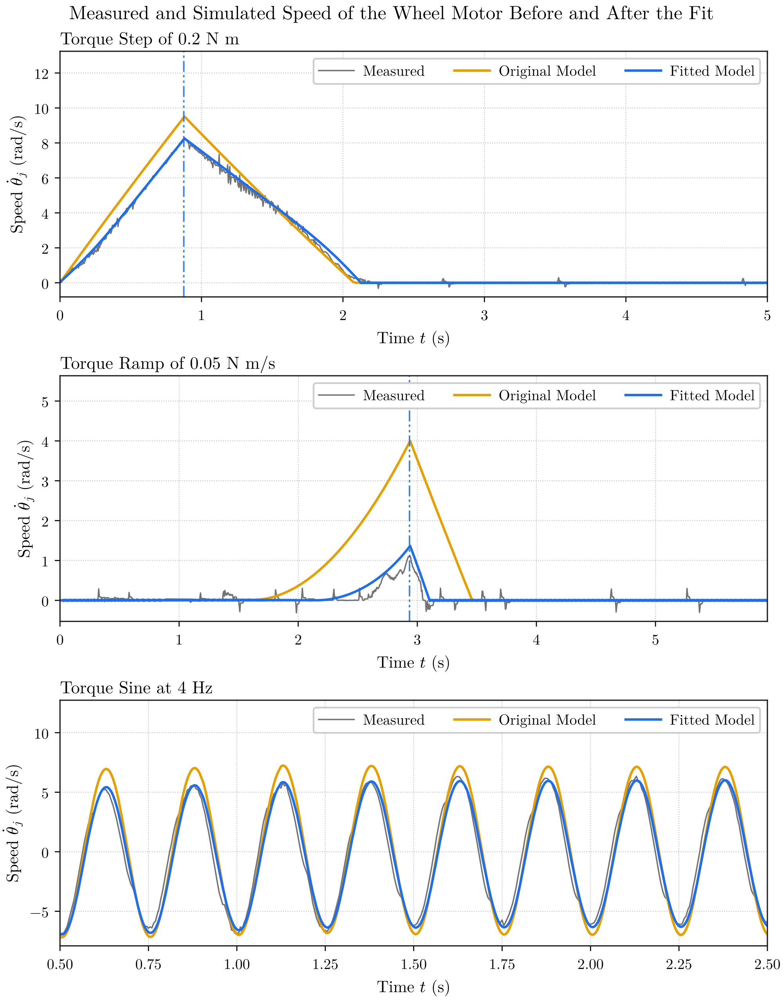
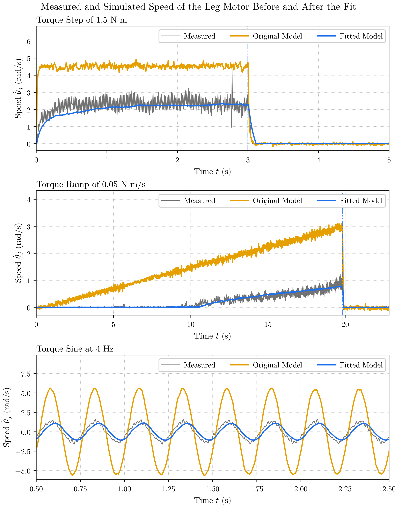
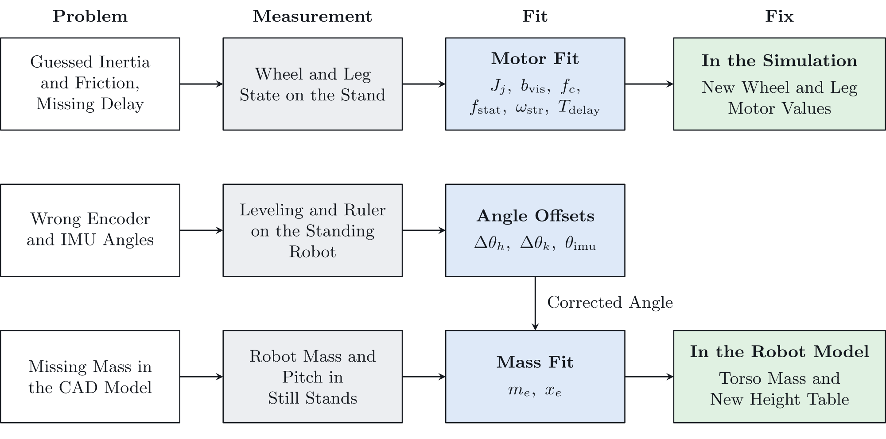
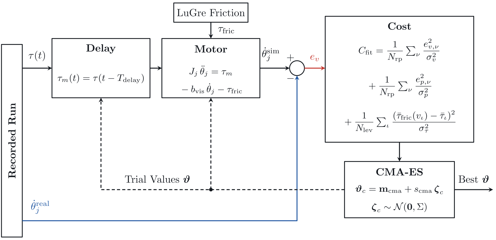

Overview
The controllers are developed in simulation, so the simulation has to behave like the robot. Three parts of the original model did not. The wheel and leg motors had guessed inertia and friction and no command delay. The encoders and the IMU read angles with a constant offset, so the robot balanced 8 to 10 degrees away from the balance of the model. The robot is also 1.23 kg heavier than the CAD model.
I built the identification pipeline that measures, fits and fixes each problem.
Process
Excite each motor
Each motor is commanded with a speed staircase, a torque step, a torque ramp and a torque sine, and the motion is recorded.
Fit the motor model
A MuJoCo model of each motor, with an inertia, LuGre friction and a torque delay, replays the recorded torque. CMA-ES searches for the values that make the simulated motion match the measured motion.
Measure the angle offsets
A leveling measurement on the torso and a ruler at three heights give the true pitch and joint angles, which fix the IMU offset and the encoder offsets.
Find the missing mass
The mass the CAD model lacks is added to the torso as one mass, and its position is chosen so the model balances at the pitch the robot reaches.
Validate on new signals
The robot and the full simulation run the same wheel and leg tests, and the errors are compared.
Results
The fitted model follows the leg motor closely and the wheel motor less well, and the corrected parameters bring the simulation close to the robot. On the wheel and leg tests, the simulation speed error is 0.11 rad/s on the wheel speed stair and the hip and knee angle errors are 0.012 rad and 0.026 rad.
Table 1. Speed error of the motor model, root mean square in rad/s
| Signal | Wheel Original | Wheel Fitted | Leg Original | Leg Fitted |
|---|---|---|---|---|
| Torque Steps | 0.97 | 0.40 | 1.44 | 0.13 |
| Torque Ramps | 0.75 | 0.12 | 1.36 | 0.06 |
| Torque Sines | 1.11 | 0.77 | 1.81 | 0.18 |
Table 2. Robot parameters before and after identification
| Parameter | Before | After |
|---|---|---|
| Total Mass | 10.55 kg | 11.78 kg |
| Torso Mass | 2.27 kg | 3.49 kg |
| IMU Offset | 0° | 1.46° |
| Pitch Setpoint | 7.7°, by Hand | 1.2° on the Robot, 0° in the Simulation |


Figures and Video

